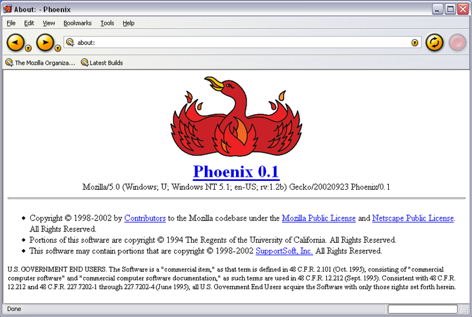

JavaScript
For non-JavaScript developers
Brief history of JavaScript
Netscape Navigator & Brendan Eich
In 1995 Netscape tasked Brendan Eich to create a new language for
the Web.
10 days later HTML, CSS and LiveScript are born.
Officially JavaScript
Netscape renames LiveScript to JavaScript in collaboration with Sun Microsystems as a complement to Java for Web development.
Netscape vs Microsoft
Microsoft reverse engineers JavaScript, creates JScript for Internet Explorer.
Death of JavaScript
Netscape quickly loses market to IE4. JavaScript dies as its only supported browser is forgotten.

ECMA
In 1997 Brendan Eich submits JavaScript to ECMA, the nameless language lives on as ECMAScript.
The rise of the phoenix
ECMAScript keeps fading until Netscape rises from its ashes as Phoenix, later Firefox.
The first golden age
ECMAScript sees its first golden age as Ajax is released as a set of async technologies using it. JQuery, MooTools and other libraries are released during this period.
Google arrives just in time
In 2008 Google releases Chrome, using a new engine named V8, adds JIT and forces the work on ECMAScript to resume after Microsoft blockade.
Ryan Dahl announces Node
Enters JSConf 2009.
Anounces Node.
Leaves.

Second golden age: React
In 2013 Facebook revolutionizes the web dev world by creating an endless amount of new jobs to fix React applications.

What is JiT?
JiT in practice
Compiler
Scope
Engine
Compiler
Generates & hoist code
Scope
Engine
Compiler
Generates & hoist code
Scope
Maintains look-up lists
Engine
Compiler
Generates & hoist code
Scope
Maintains look-up lists
Engine
Executes code
var a = 1;
function myFunc(b) {
console.log(a + b)
}
myFunc(2)
var a = 1;
function myFunc(b) {
console.log(a + b)
}
myFunc(2)
var a = 1;
function myFunc(b) {
console.log(a + b)
}
myFunc(2)
var a = 1;
function myFunc(b) {
console.log(a + b)
}
myFunc(2)
-
The engine performs mainly 2 jobs:
- LHS lookup
- RHS lookup
-
The engine performs mainly 2 jobs:
- LHS lookup assigns a value
- RHS lookup
-
The engine performs mainly 2 jobs:
- LHS lookup assigns a value
- RHS lookup retrieves a value
var a = 1;
function myFunc(b) {
console.log(a + b)
}
myFunc(2)
var a = 1;
function myFunc(b) {
console.log(a + b)
}
myFunc(2)
-
Errors:
- Reference Error is a failure of LHS or RHS lookup, the variable does not exist at the time of lookup.
- Type Error is operation failure on an value found in scope.
Scope
var a = 1;
function myFunc(b) {
function myOtherFunc(c) {
console.log(a, b, c)
}
myOtherFunc(3)
}
myFunc(2) // 1, 2, 3
var a = 1;
function myFunc(b) {
function myOtherFunc(c) {
console.log(a, b, c)
}
myOtherFunc(3)
}
myFunc(2) // 1, 2, 3
var a = 1; // shadowed by the other a
function myFunc() {
var a = 2
console.log(a)
}
myFunc() // 2
Principle of least privilege and scope
Function scope
The "default" JS scope works for function blocks only. This is bad.
for (var i = 0; i < 10; i++) { // false scope
console.log(i)
}
if (true) {
var b = 20; // false scope
function f() { console.log(1) } // false scope
}
console.log(i, b) // 10, 20
f(); // 1
for (let i = 0; i < 10; i++) {
console.log(i)
}
if (true) {
const b = 20;
const f = () => { console.log(1) }
}
console.log(i, b) // Reference Error
f(); // Reference Error
-
Advantages of block scope:
- Automatic garbage collection
- Least privilege by default
- Const introduces fixed values
- Const prevents name reasignment
setTimeout(() => { // bad
console.log(1)
}, 1000)
const a = () => { console.log(1) }
setTimeout(a, 1000) // good
this Keyword
function greetings() {
console.log("Hello I am", this.name);
}
var me = {
name: "Francesco"
}
var bossman = {
name: "Vlad"
}
greetings.call(me) // Hello I am Francesco
greetings.call(bossman) // Hello I am Vlad
-
While the
function
keyword should not be abandoned, its use case (binding
this) is an important, albeit somewhat niche, use-case.
Primitives
-
Primitives:
- string
- number (NaN is a number!)
- boolean
- undefined
- null
- symbol
- bigint
let a = 1;
let b = a;
b = 2;
console.log(a) // 1
console.log(b) // 2
JavaScript automatically uses object contructors behind the curtains when performing operations on primitives.
let realString = "a"
typeof realString // "string"
realString instanceof String // false
let objectString = new String("b")
typeof objectString // "object"
objectString instanceof String // true
let a; // undefined
const b = () => {
return; // undefined
}
let c = [1,2].find(n => n === 3) // undefined
- undefined should not be used explicitly, but only detected implicitly.
- null can be used in cases where we explicitly don't want a value to be returned.
- null and undefined have no constructor.
Less specific falsy checks are less prone to errors than type specific ones.
let obj = { a: 1, b: null };
typeof a.b === "undefined" // false
typeof a.c === "undefined" // true
!a.b // true
!a.c // true
Objects
-
Everything that is
not
a primitive is an exotic object, some examples:
- Array
- Function
- Error
- Date
- RegExp
- Set
- Proxy
- Reflect
- Map
- Math
- JSON
- ...
let a = [1,2];
let b = a;
b.push(3);
console.log(a) // [1,2,3]
console.log(b) // [1,2,3]
Our purpose when writing JavaScript code is not to copy behaviour from other languages, but use JavaScript's own features to solve the unique problems encountered in a frontend environment.
Async
fetchItalianJoke((joke) => {
// if (...)
translateJokeToRomanian(joke, (translateJoke) => {
// if (...)
doubleCheckTranslation(translateJoke, (correctTranslatedJoke) => {
// if (...)
postJoke(correctTranslatedJoke, () => {
// if (...)
console.log("Done!")
})
})
})
})
const getJoke = async () => {
try {
const joke = await fetchItalianJoke()
const translatedJoke = await translateJokeToRomanian(joke)
const correctTranslatedJoke = await doubleCheckTranslation(translatedJoke)
await postJoke(correctTranslatedJoke)
console.log("Done!")
} catch (err) { // err is block scoped!
console.error(err)
}
}
Pure Functions
const num1 = 1;
const num2 = 2;
const sum = (a,b) => a + b;
const num3 = f(num1, num2)
console.log(num1) // 1
console.log(num2) // 2
console.log(num3) // 3
for (let i = 0; i < 100; i++) {
// run this test 100 times
test('adding 2 numbers results in their sum', () => {
const r1 = Math.floor(Math.random() * 10) + 1 // 1-10
const r2 = Math.floor(Math.random() * 10) + 1 // 1-10
expect(sum(r1, r2)).toBe(r1 + r2);
});
}
const addNum = (arr) => { // impure
arr.push(arr.length + 1)
}
let numbers = [1,2,3,4]
addNum(numbers)
numbers // [1,2,3,4,11]
const addNum = (arr) => { // pure
return arr.length + 1
}
let numbers = [1,2,3,4]
numbers.push(addNum(numbers))
numbers // [1,2,3,4,10]
Immutability
const a = 1
a = 2 // TypeError!
const b = { a: 1 }
b.a = 2 // { a: 2 }
const x = Object.freeze({ a: 1, b: { c: 2 }})
x.a = 2 // error
x.b.c = 1 // allowed
const updateUserRole = (user, role) => {
const newUser = { ...user, role }
return newUser
}
You should treat all data as immutable by default.
Single source of truth
By having a centralized application state, the UI needs only to listen to a single entity, and update only when that entity is updated.
This greatly simplifies how a UI is written and brings down maintenance time considerably.
const reducer = (state, { type } = {}) => {
switch(type) {
case 'increment':
return { value: state.value + 1 }
default:
return state
}
}
export const store = {
state: { value: 1 },
dispatch: function (action) {
this.state = reducer(this.state, action)
}
}
store.state // { value: 1 }
store.dispatch({ type: "increment" })
store.state // { value: 2 }
const state = { value: 1 }
export const store = {
state: Object.freeze({ value: 1 }),
dispatch: function (action) {
state = reducer(state, action)
}
}
If you need to execute code to understand it, there's a problem with the code.